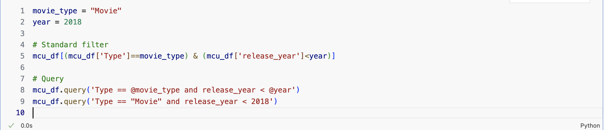

1. Pandas#
1.1. Pandas Dataframe#
Pandas is a python package for importing, inspecting, cleaning, aggregating, transforming, and visualizing data. You import pandas as:
import pandas as pd
1.2. Creating a dataframe#
Pandas introduces a new datatype, the DataFrame.
The dataframe is a two dimensional container that organizes data into rows (samples) and columns (features) much like a spreadsheet.
We can create a dataframe using a dictionary. The keys of the dictionary will be the columns of the dataframe and the values will be the the row values. So, the values in our dictionary should be lists or numpy arrays.
For example, let’s extend our earning dictionary from above. For each key, replace the value with the following lists:
month - [‘Sept’, ‘Oct’, ‘Nov’]
gross - [22000, 24500, 18000]
expenses - [16000, 16000, 8000]
net - (gross - expenses)
Once we have the dict, we can create the dataframe using
earnings_df = pd.DataFrame(earnings)
import pandas as pd
import numpy as np
import matplotlib.pyplot as plt
earnings_dict = dict(
month = ['Sept', 'Oct', 'Nov'],
gross = [22000, 24500, 18000],
expenses = [16000, 16000, 8000]
)
earnings_dict
{'month': ['Sept', 'Oct', 'Nov'],
'gross': [22000, 24500, 18000],
'expenses': [16000, 16000, 8000]}
We can convert the dictionary into a dataframe using pd.DataFrame(). The keys become the column headers and the associated values become…the values.
A note of caution, to convert a dictionary into a dataframe, the value lists for each column must be the same length.
earnings_df = pd.DataFrame(earnings_dict)
earnings_df
| month | gross | expenses | |
|---|---|---|---|
| 0 | Sept | 22000 | 16000 |
| 1 | Oct | 24500 | 16000 |
| 2 | Nov | 18000 | 8000 |
And like a dictionary, we can append new columns on the fly.
earnings_df['net'] = earnings_df['gross']- earnings_df['expenses']
earnings_df
| month | gross | expenses | net | |
|---|---|---|---|---|
| 0 | Sept | 22000 | 16000 | 6000 |
| 1 | Oct | 24500 | 16000 | 8500 |
| 2 | Nov | 18000 | 8000 | 10000 |
1.3. Calculations on Columns#
When extracting a column, you can use numpy functions to get different measures of those data:
.mean()
.std()
.min()
.max()
.sum()
.unique()
earnings_df['gross']
0 22000
1 24500
2 18000
Name: gross, dtype: int64
earnings_df['net'] = earnings_df['gross'] - earnings_df['expenses']
fig, ax = plt.subplots(1,1, figsize = (5,5))
ax.bar(earnings_df['month'], earnings_df['net'], label = 'net')
ax.bar(earnings_df['month'], earnings_df['expenses'],
bottom = earnings_df['net'],
label = 'expenses')
ax.set_ylabel('Amount ($)')
plt.legend()
plt.title('Net and Expenses by Month')
plt.show()

Pandas has its own custom plotting commands, but its built on matplotlib and the functionality is the same.
fig, ax = plt.subplots(1,1, figsize = (5,5))
earnings_df.plot(
x='month',
y=['net', 'expenses'],
kind='bar',
stacked=True,
ax = ax
)
ax.set_ylabel('Amount ($)')
plt.show()

1.4. Importing and Inspecting Data#
Most of the time, we’ll be using data that exist outside of Python, either data that somebody else has collected or data that we’ve collected and saved to some other kind of file (.csv, .json, etc). We’ll import data into the dataframe using:
df = pd.read_csv(data.csv)
Where data.csv could be a filepath on your computer or a url to a file that exists online. There are other commands that allow pandas to import a variety of data filetypes.
Once a file is imported, we can inspect the data using:
df.head(n)- Look at the first n rows (5 rows by default, if you omit n)df.tail(n)- Look at the last n rowsdf.describe()- Get information and statistics of the datadf.columns- Get a list of feature names
We’ll import and inspect the Marvel Cinematic Universe (MCU) Movies & Series dataset, compiled by Stephen Tracy and published on Kaggle: https://www.kaggle.com/datasets/stevetracy/marvel-cinematic-universe-mcu-movies-and-series
1.5. Example: MCU dataset#
mcu_df = pd.read_csv('https://raw.githubusercontent.com/GettysburgDataScience/datasets/refs/heads/main/mcu_data_apr_2024.csv')
mcu_df.head()
| movie_title | Type | mcu_phase_number | mcu_phase_text | release_date | release_year | rt_tomato_meter | rt_audience_score | imdb-rating | metacritic_metascore | metacritic_userscore | production_budget | domestic_box_office | international_box_office | worldwide_box_office | |
|---|---|---|---|---|---|---|---|---|---|---|---|---|---|---|---|
| 0 | Iron Man | Movie | 1.0 | MCU Phase 1 | 5/2/08 | 2008.0 | 94.0 | 91.0 | 7.9 | 79.0 | 8.6 | $140,000,000 | $319,034,126 | $266,762,121 | $585,796,247 |
| 1 | The Incredible Hulk | Movie | 1.0 | MCU Phase 1 | 6/13/08 | 2008.0 | 67.0 | 70.0 | 6.6 | 61.0 | 6.8 | $140,000,000 | $134,806,913 | $128,620,638 | $263,427,551 |
| 2 | Iron Man 2 | Movie | 1.0 | MCU Phase 1 | 5/7/10 | 2010.0 | 72.0 | 71.0 | 6.9 | 57.0 | 6.4 | $200,000,000 | $312,433,331 | $311,500,000 | $623,933,331 |
| 3 | Thor | Movie | 1.0 | MCU Phase 1 | 5/6/11 | 2011.0 | 77.0 | 76.0 | 7.0 | 57.0 | 7.0 | $150,000,000 | $181,030,624 | $268,295,994 | $449,326,618 |
| 4 | Captain America: The First Avenger | Movie | 1.0 | MCU Phase 1 | 7/22/11 | 2011.0 | 79.0 | 75.0 | 6.9 | 66.0 | 6.8 | $140,000,000 | $176,654,505 | $193,915,269 | $370,569,774 |
1.5.1. Data Cleaning#
The data have three main issues:
The last two rows are missing all data. Easy fix.
Some of the headings have leading and trailing spaces (e.g. ‘ worldwide_box_office ‘). Annoying.
All the budget and revenue columns list the dollar amounts as strings with $ and commas. Annnoyyyyying.
For now, I’m just cleaning the data for you. We’ll cover these tools later.
1.5.1.1. Dropping bad data#
Data can be ‘bad’ for numerous reasons, but most immediately obvious are missing data. We drop missing data with df.dropna (dropna documentation)
mcu_df.dropna(axis=0, inplace=True)
mcu_df.tail()
| movie_title | Type | mcu_phase_number | mcu_phase_text | release_date | release_year | rt_tomato_meter | rt_audience_score | imdb-rating | metacritic_metascore | metacritic_userscore | production_budget | domestic_box_office | international_box_office | worldwide_box_office | |
|---|---|---|---|---|---|---|---|---|---|---|---|---|---|---|---|
| 38 | Ant-Man and the Wasp: Quantumania | Movie | 5.0 | MCU Phase 5 | 2/17/23 | 2023.0 | 46.0 | 82.0 | 6.1 | 48.0 | 5.5 | $200,000,000 | $214,504,909 | $261,566,271 | $476,071,180 |
| 39 | Guardians of the Galaxy Vol. 3 | Movie | 5.0 | MCU Phase 5 | 5/5/23 | 2023.0 | 82.0 | 94.0 | 7.9 | 64.0 | 7.9 | $250,000,000 | $358,995,815 | $486,559,962 | $845,555,777 |
| 40 | Secret Invasion | TV Show | 5.0 | MCU Phase 5 | 6/21/23 | 2023.0 | 53.0 | 46.0 | 5.9 | 63.0 | 3.5 | $211,000,000 | - | - | - |
| 41 | The Marvels | Movie | 5.0 | MCU Phase 5 | 11/10/23 | 2023.0 | 62.0 | 82.0 | 5.6 | 50.0 | 3.8 | $270,000,000 | $84,500,223 | $121,612,709 | $206,112,932 |
| 42 | Echo | TV Show | 5.0 | MCU Phase 5 | 1/9/24 | 2024.0 | 71.0 | 61.0 | 6.0 | 62.0 | 5.2 | $40,000,000 | - | - | - |
1.5.1.2. Renaming Columns#
We can rename columns using the function .rename() which takes as input a dictionary. The keys of the dictionary are the current column headers and the values are the replacement headers.
rename_dict = {col:col.strip() for col in mcu_df.columns}
mcu_df.rename(columns = rename_dict, inplace=True)
1.5.1.3. Converting strings to numbers#
We can use the map function to modify entries of the DataFrame by some function.
def convert_dollars(entry):
if entry == ' - ':
return np.nan
elif isinstance(entry, str):
entry = entry.replace('$','').replace(',','')
return int(entry)
else:
return(entry)
money_cols = ['production_budget', 'domestic_box_office','international_box_office', 'worldwide_box_office']
mcu_df[money_cols] = mcu_df[money_cols].map(convert_dollars)
1.5.1.4. Inspection#
What movies/tv shows are on the list?
What are the statistics of the numeric columns?
mcu_df['movie_title'].unique()
array(['Iron Man', 'The Incredible Hulk', 'Iron Man 2', 'Thor',
'Captain America: The First Avenger', 'The Avengers', 'Iron Man 3',
'Thor: The Dark World', 'Captain America: The Winter Soldier',
'Guardians of the Galaxy', 'Avengers: Age of Ultron', 'Ant-Man',
'Captain America: Civil War', 'Doctor Strange',
'Guardians of the Galaxy Vol. 2', 'Spider-Man: Homecoming',
'Thor: Ragnarok', 'Black Panther', 'Avengers: Infinity War',
'Ant-Man and the Wasp', 'Captain Marvel', 'Avengers: Endgame',
'Spider-Man: Far From Home', 'WandaVision',
'The Falcon and the Winter Soldier', 'Loki', 'Black Widow',
'What If…?', 'Shang-Chi and the Legend of the Ten Rings',
'Eternals', 'Hawkeye', 'Spider-Man: No Way Home', 'Moon Knight',
'Doctor Strange: Multiverse of Madness', 'Ms. Marvel',
'Thor: Love and Thunder', 'She-Hulk',
'Black Panther: Wakanda Forever',
'Ant-Man and the Wasp: Quantumania',
'Guardians of the Galaxy Vol. 3', 'Secret Invasion', 'The Marvels',
'Echo'], dtype=object)
mcu_df.tail()
| movie_title | Type | mcu_phase_number | mcu_phase_text | release_date | release_year | rt_tomato_meter | rt_audience_score | imdb-rating | metacritic_metascore | metacritic_userscore | production_budget | domestic_box_office | international_box_office | worldwide_box_office | |
|---|---|---|---|---|---|---|---|---|---|---|---|---|---|---|---|
| 38 | Ant-Man and the Wasp: Quantumania | Movie | 5.0 | MCU Phase 5 | 2/17/23 | 2023.0 | 46.0 | 82.0 | 6.1 | 48.0 | 5.5 | 200000000.0 | 214504909.0 | 261566271.0 | 476071180.0 |
| 39 | Guardians of the Galaxy Vol. 3 | Movie | 5.0 | MCU Phase 5 | 5/5/23 | 2023.0 | 82.0 | 94.0 | 7.9 | 64.0 | 7.9 | 250000000.0 | 358995815.0 | 486559962.0 | 845555777.0 |
| 40 | Secret Invasion | TV Show | 5.0 | MCU Phase 5 | 6/21/23 | 2023.0 | 53.0 | 46.0 | 5.9 | 63.0 | 3.5 | 211000000.0 | NaN | NaN | NaN |
| 41 | The Marvels | Movie | 5.0 | MCU Phase 5 | 11/10/23 | 2023.0 | 62.0 | 82.0 | 5.6 | 50.0 | 3.8 | 270000000.0 | 84500223.0 | 121612709.0 | 206112932.0 |
| 42 | Echo | TV Show | 5.0 | MCU Phase 5 | 1/9/24 | 2024.0 | 71.0 | 61.0 | 6.0 | 62.0 | 5.2 | 40000000.0 | NaN | NaN | NaN |
mcu_describe = mcu_df.describe()
Describe creates another dataframe and we can save this as a variable and interact with it.
1.6. Slicing dataframes#
df.COLUMN_NAMEordf[COLUMN_NAME]ordf.loc[COLUMN_NAME]- slice an individual columndf[LIST_OF_COLUMN_NAMES]ordf.loc[LIST_OF_COLUMN_NAME]- slice multiple columnsdf.iloc[ROW_INDICES]- slice multiple rows
How does Pandas know whether you meant to slice a column or a row?
You can ‘slice’ columns or rows from a dataframe using:
df[LIST_OF_COLUMN_NAMES].iloc[ROW_INDICES]- slice along columns and rows
Let’s get the movie_title, release_date, rt_audience_score, metacritic_userscore, production_budget, and worldwide_box_office for the last ten most recent entries (as of the time this list was made).
# A single column
mcu_df['movie_title']
0 Iron Man
1 The Incredible Hulk
2 Iron Man 2
3 Thor
4 Captain America: The First Avenger
5 The Avengers
6 Iron Man 3
7 Thor: The Dark World
8 Captain America: The Winter Soldier
9 Guardians of the Galaxy
10 Avengers: Age of Ultron
11 Ant-Man
12 Captain America: Civil War
13 Doctor Strange
14 Guardians of the Galaxy Vol. 2
15 Spider-Man: Homecoming
16 Thor: Ragnarok
17 Black Panther
18 Avengers: Infinity War
19 Ant-Man and the Wasp
20 Captain Marvel
21 Avengers: Endgame
22 Spider-Man: Far From Home
23 WandaVision
24 The Falcon and the Winter Soldier
25 Loki
26 Black Widow
27 What If…?
28 Shang-Chi and the Legend of the Ten Rings
29 Eternals
30 Hawkeye
31 Spider-Man: No Way Home
32 Moon Knight
33 Doctor Strange: Multiverse of Madness
34 Ms. Marvel
35 Thor: Love and Thunder
36 She-Hulk
37 Black Panther: Wakanda Forever
38 Ant-Man and the Wasp: Quantumania
39 Guardians of the Galaxy Vol. 3
40 Secret Invasion
41 The Marvels
42 Echo
Name: movie_title, dtype: object
# Mulitple columns as a list
mcu_df[['movie_title', 'release_year']]
| movie_title | release_year | |
|---|---|---|
| 0 | Iron Man | 2008.0 |
| 1 | The Incredible Hulk | 2008.0 |
| 2 | Iron Man 2 | 2010.0 |
| 3 | Thor | 2011.0 |
| 4 | Captain America: The First Avenger | 2011.0 |
| 5 | The Avengers | 2012.0 |
| 6 | Iron Man 3 | 2013.0 |
| 7 | Thor: The Dark World | 2013.0 |
| 8 | Captain America: The Winter Soldier | 2014.0 |
| 9 | Guardians of the Galaxy | 2014.0 |
| 10 | Avengers: Age of Ultron | 2015.0 |
| 11 | Ant-Man | 2015.0 |
| 12 | Captain America: Civil War | 2016.0 |
| 13 | Doctor Strange | 2016.0 |
| 14 | Guardians of the Galaxy Vol. 2 | 2017.0 |
| 15 | Spider-Man: Homecoming | 2017.0 |
| 16 | Thor: Ragnarok | 2017.0 |
| 17 | Black Panther | 2018.0 |
| 18 | Avengers: Infinity War | 2018.0 |
| 19 | Ant-Man and the Wasp | 2018.0 |
| 20 | Captain Marvel | 2019.0 |
| 21 | Avengers: Endgame | 2019.0 |
| 22 | Spider-Man: Far From Home | 2019.0 |
| 23 | WandaVision | 2021.0 |
| 24 | The Falcon and the Winter Soldier | 2021.0 |
| 25 | Loki | 2021.0 |
| 26 | Black Widow | 2021.0 |
| 27 | What If…? | 2021.0 |
| 28 | Shang-Chi and the Legend of the Ten Rings | 2021.0 |
| 29 | Eternals | 2021.0 |
| 30 | Hawkeye | 2021.0 |
| 31 | Spider-Man: No Way Home | 2021.0 |
| 32 | Moon Knight | 2022.0 |
| 33 | Doctor Strange: Multiverse of Madness | 2022.0 |
| 34 | Ms. Marvel | 2022.0 |
| 35 | Thor: Love and Thunder | 2022.0 |
| 36 | She-Hulk | 2022.0 |
| 37 | Black Panther: Wakanda Forever | 2022.0 |
| 38 | Ant-Man and the Wasp: Quantumania | 2023.0 |
| 39 | Guardians of the Galaxy Vol. 3 | 2023.0 |
| 40 | Secret Invasion | 2023.0 |
| 41 | The Marvels | 2023.0 |
| 42 | Echo | 2024.0 |
# Specific rows by index
mcu_df.iloc[5:10]
| movie_title | Type | mcu_phase_number | mcu_phase_text | release_date | release_year | rt_tomato_meter | rt_audience_score | imdb-rating | metacritic_metascore | metacritic_userscore | production_budget | domestic_box_office | international_box_office | worldwide_box_office | |
|---|---|---|---|---|---|---|---|---|---|---|---|---|---|---|---|
| 5 | The Avengers | Movie | 1.0 | MCU Phase 1 | 5/4/12 | 2012.0 | 91.0 | 91.0 | 8.0 | 69.0 | 8.0 | 220000000.0 | 623357910.0 | 895442000.0 | 1.518800e+09 |
| 6 | Iron Man 3 | Movie | 2.0 | MCU Phase 2 | 5/3/13 | 2013.0 | 79.0 | 78.0 | 7.1 | 62.0 | 6.7 | 200000000.0 | 409013994.0 | 806426000.0 | 1.215440e+09 |
| 7 | Thor: The Dark World | Movie | 2.0 | MCU Phase 2 | 11/8/13 | 2013.0 | 66.0 | 75.0 | 6.8 | 54.0 | 7.0 | 170000000.0 | 206362140.0 | 438421000.0 | 6.447831e+08 |
| 8 | Captain America: The Winter Soldier | Movie | 2.0 | MCU Phase 2 | 4/4/14 | 2014.0 | 90.0 | 92.0 | 7.7 | 70.0 | 8.3 | 170000000.0 | 259766572.0 | 454654931.0 | 7.144215e+08 |
| 9 | Guardians of the Galaxy | Movie | 2.0 | MCU Phase 2 | 8/1/14 | 2014.0 | 92.0 | 92.0 | 8.0 | 76.0 | 8.2 | 170000000.0 | 333176600.0 | 439697800.0 | 7.728744e+08 |
# specified columns and in reverse order using [::-1] slice
mcu_df[['movie_title', 'release_year', 'rt_audience_score']].iloc[::-1]
| movie_title | release_year | rt_audience_score | |
|---|---|---|---|
| 42 | Echo | 2024.0 | 61.0 |
| 41 | The Marvels | 2023.0 | 82.0 |
| 40 | Secret Invasion | 2023.0 | 46.0 |
| 39 | Guardians of the Galaxy Vol. 3 | 2023.0 | 94.0 |
| 38 | Ant-Man and the Wasp: Quantumania | 2023.0 | 82.0 |
| 37 | Black Panther: Wakanda Forever | 2022.0 | 94.0 |
| 36 | She-Hulk | 2022.0 | 32.0 |
| 35 | Thor: Love and Thunder | 2022.0 | 76.0 |
| 34 | Ms. Marvel | 2022.0 | 80.0 |
| 33 | Doctor Strange: Multiverse of Madness | 2022.0 | 85.0 |
| 32 | Moon Knight | 2022.0 | 89.0 |
| 31 | Spider-Man: No Way Home | 2021.0 | 98.0 |
| 30 | Hawkeye | 2021.0 | 88.0 |
| 29 | Eternals | 2021.0 | 78.0 |
| 28 | Shang-Chi and the Legend of the Ten Rings | 2021.0 | 98.0 |
| 27 | What If…? | 2021.0 | 92.0 |
| 26 | Black Widow | 2021.0 | 91.0 |
| 25 | Loki | 2021.0 | 90.0 |
| 24 | The Falcon and the Winter Soldier | 2021.0 | 82.0 |
| 23 | WandaVision | 2021.0 | 88.0 |
| 22 | Spider-Man: Far From Home | 2019.0 | 95.0 |
| 21 | Avengers: Endgame | 2019.0 | 90.0 |
| 20 | Captain Marvel | 2019.0 | 45.0 |
| 19 | Ant-Man and the Wasp | 2018.0 | 81.0 |
| 18 | Avengers: Infinity War | 2018.0 | 91.0 |
| 17 | Black Panther | 2018.0 | 79.0 |
| 16 | Thor: Ragnarok | 2017.0 | 87.0 |
| 15 | Spider-Man: Homecoming | 2017.0 | 87.0 |
| 14 | Guardians of the Galaxy Vol. 2 | 2017.0 | 87.0 |
| 13 | Doctor Strange | 2016.0 | 86.0 |
| 12 | Captain America: Civil War | 2016.0 | 89.0 |
| 11 | Ant-Man | 2015.0 | 85.0 |
| 10 | Avengers: Age of Ultron | 2015.0 | 83.0 |
| 9 | Guardians of the Galaxy | 2014.0 | 92.0 |
| 8 | Captain America: The Winter Soldier | 2014.0 | 92.0 |
| 7 | Thor: The Dark World | 2013.0 | 75.0 |
| 6 | Iron Man 3 | 2013.0 | 78.0 |
| 5 | The Avengers | 2012.0 | 91.0 |
| 4 | Captain America: The First Avenger | 2011.0 | 75.0 |
| 3 | Thor | 2011.0 | 76.0 |
| 2 | Iron Man 2 | 2010.0 | 71.0 |
| 1 | The Incredible Hulk | 2008.0 | 70.0 |
| 0 | Iron Man | 2008.0 | 91.0 |
1.7. Adding a column#
Just as in dictionaries, you can add a calculated column as you go.
# a new column indicating whether viewers or critics liked the movie more
mcu_df['audience_vs_critic'] = mcu_df['rt_audience_score'] - mcu_df['rt_tomato_meter']
# a new column calculating the net revenue
mcu_df['profit'] = mcu_df['worldwide_box_office'] - mcu_df['production_budget']
# a new column using the new column above
mcu_df['profit_margin'] = mcu_df['profit']/mcu_df['worldwide_box_office']
mcu_df.head()
| movie_title | Type | mcu_phase_number | mcu_phase_text | release_date | release_year | rt_tomato_meter | rt_audience_score | imdb-rating | metacritic_metascore | metacritic_userscore | production_budget | domestic_box_office | international_box_office | worldwide_box_office | audience_vs_critic | profit | profit_margin | |
|---|---|---|---|---|---|---|---|---|---|---|---|---|---|---|---|---|---|---|
| 0 | Iron Man | Movie | 1.0 | MCU Phase 1 | 5/2/08 | 2008.0 | 94.0 | 91.0 | 7.9 | 79.0 | 8.6 | 140000000.0 | 319034126.0 | 266762121.0 | 585796247.0 | -3.0 | 445796247.0 | 0.761009 |
| 1 | The Incredible Hulk | Movie | 1.0 | MCU Phase 1 | 6/13/08 | 2008.0 | 67.0 | 70.0 | 6.6 | 61.0 | 6.8 | 140000000.0 | 134806913.0 | 128620638.0 | 263427551.0 | 3.0 | 123427551.0 | 0.468545 |
| 2 | Iron Man 2 | Movie | 1.0 | MCU Phase 1 | 5/7/10 | 2010.0 | 72.0 | 71.0 | 6.9 | 57.0 | 6.4 | 200000000.0 | 312433331.0 | 311500000.0 | 623933331.0 | -1.0 | 423933331.0 | 0.679453 |
| 3 | Thor | Movie | 1.0 | MCU Phase 1 | 5/6/11 | 2011.0 | 77.0 | 76.0 | 7.0 | 57.0 | 7.0 | 150000000.0 | 181030624.0 | 268295994.0 | 449326618.0 | -1.0 | 299326618.0 | 0.666167 |
| 4 | Captain America: The First Avenger | Movie | 1.0 | MCU Phase 1 | 7/22/11 | 2011.0 | 79.0 | 75.0 | 6.9 | 66.0 | 6.8 | 140000000.0 | 176654505.0 | 193915269.0 | 370569774.0 | -4.0 | 230569774.0 | 0.622203 |
1.8. Filtering dataframes#
You can also select rows of a dataframe that satisfy some condition (e.g. greater than some value, string starts with, before some date, value in a range, etc).
There are two main ways to filter dataframes based on conditions:
df[CONDITION]- the condition in terms of df.COLUMN_NAMEdf.query('CONDITION')- the condition in terms of COLUMN_NAME
The syntaxes of these two approaches are illustrated by an example.
Example:
Find me only movies that were released before 2018.
movie_type = "Movie"
year = 2018
# Standard filter
mcu_df[(mcu_df['Type']==movie_type) & (mcu_df['release_year']<year)]
# Query
mcu_df.query('Type == @movie_type and release_year < @year')
mcu_df.query('Type == "Movie" and release_year < 2018')
| movie_title | Type | mcu_phase_number | mcu_phase_text | release_date | release_year | rt_tomato_meter | rt_audience_score | imdb-rating | metacritic_metascore | metacritic_userscore | production_budget | domestic_box_office | international_box_office | worldwide_box_office | audience_vs_critic | profit | profit_margin | |
|---|---|---|---|---|---|---|---|---|---|---|---|---|---|---|---|---|---|---|
| 0 | Iron Man | Movie | 1.0 | MCU Phase 1 | 5/2/08 | 2008.0 | 94.0 | 91.0 | 7.9 | 79.0 | 8.6 | 140000000.0 | 319034126.0 | 266762121.0 | 5.857962e+08 | -3.0 | 4.457962e+08 | 0.761009 |
| 1 | The Incredible Hulk | Movie | 1.0 | MCU Phase 1 | 6/13/08 | 2008.0 | 67.0 | 70.0 | 6.6 | 61.0 | 6.8 | 140000000.0 | 134806913.0 | 128620638.0 | 2.634276e+08 | 3.0 | 1.234276e+08 | 0.468545 |
| 2 | Iron Man 2 | Movie | 1.0 | MCU Phase 1 | 5/7/10 | 2010.0 | 72.0 | 71.0 | 6.9 | 57.0 | 6.4 | 200000000.0 | 312433331.0 | 311500000.0 | 6.239333e+08 | -1.0 | 4.239333e+08 | 0.679453 |
| 3 | Thor | Movie | 1.0 | MCU Phase 1 | 5/6/11 | 2011.0 | 77.0 | 76.0 | 7.0 | 57.0 | 7.0 | 150000000.0 | 181030624.0 | 268295994.0 | 4.493266e+08 | -1.0 | 2.993266e+08 | 0.666167 |
| 4 | Captain America: The First Avenger | Movie | 1.0 | MCU Phase 1 | 7/22/11 | 2011.0 | 79.0 | 75.0 | 6.9 | 66.0 | 6.8 | 140000000.0 | 176654505.0 | 193915269.0 | 3.705698e+08 | -4.0 | 2.305698e+08 | 0.622203 |
| 5 | The Avengers | Movie | 1.0 | MCU Phase 1 | 5/4/12 | 2012.0 | 91.0 | 91.0 | 8.0 | 69.0 | 8.0 | 220000000.0 | 623357910.0 | 895442000.0 | 1.518800e+09 | 0.0 | 1.298800e+09 | 0.855149 |
| 6 | Iron Man 3 | Movie | 2.0 | MCU Phase 2 | 5/3/13 | 2013.0 | 79.0 | 78.0 | 7.1 | 62.0 | 6.7 | 200000000.0 | 409013994.0 | 806426000.0 | 1.215440e+09 | -1.0 | 1.015440e+09 | 0.835451 |
| 7 | Thor: The Dark World | Movie | 2.0 | MCU Phase 2 | 11/8/13 | 2013.0 | 66.0 | 75.0 | 6.8 | 54.0 | 7.0 | 170000000.0 | 206362140.0 | 438421000.0 | 6.447831e+08 | 9.0 | 4.747831e+08 | 0.736345 |
| 8 | Captain America: The Winter Soldier | Movie | 2.0 | MCU Phase 2 | 4/4/14 | 2014.0 | 90.0 | 92.0 | 7.7 | 70.0 | 8.3 | 170000000.0 | 259766572.0 | 454654931.0 | 7.144215e+08 | 2.0 | 5.444215e+08 | 0.762045 |
| 9 | Guardians of the Galaxy | Movie | 2.0 | MCU Phase 2 | 8/1/14 | 2014.0 | 92.0 | 92.0 | 8.0 | 76.0 | 8.2 | 170000000.0 | 333176600.0 | 439697800.0 | 7.728744e+08 | 0.0 | 6.028744e+08 | 0.780042 |
| 10 | Avengers: Age of Ultron | Movie | 2.0 | MCU Phase 2 | 5/1/15 | 2015.0 | 76.0 | 83.0 | 7.3 | 66.0 | 7.1 | 250000000.0 | 459005868.0 | 943786000.0 | 1.402792e+09 | 7.0 | 1.152792e+09 | 0.821784 |
| 11 | Ant-Man | Movie | 2.0 | MCU Phase 2 | 7/17/15 | 2015.0 | 83.0 | 85.0 | 7.2 | 64.0 | 7.4 | 130000000.0 | 180202163.0 | 339109802.0 | 5.193120e+08 | 2.0 | 3.893120e+08 | 0.749669 |
| 12 | Captain America: Civil War | Movie | 3.0 | MCU Phase 3 | 5/6/16 | 2016.0 | 90.0 | 89.0 | 7.8 | 75.0 | 8.0 | 250000000.0 | 408084349.0 | 745231193.0 | 1.153316e+09 | -1.0 | 9.033155e+08 | 0.783234 |
| 13 | Doctor Strange | Movie | 3.0 | MCU Phase 3 | 11/4/16 | 2016.0 | 89.0 | 86.0 | 7.5 | 72.0 | 8.0 | 165000000.0 | 232641920.0 | 445060000.0 | 6.777184e+08 | -3.0 | 5.127184e+08 | 0.756536 |
| 14 | Guardians of the Galaxy Vol. 2 | Movie | 3.0 | MCU Phase 3 | 5/5/17 | 2017.0 | 85.0 | 87.0 | 7.6 | 67.0 | 7.8 | 200000000.0 | 389813101.0 | 473900000.0 | 8.637561e+08 | 2.0 | 6.637561e+08 | 0.768453 |
| 15 | Spider-Man: Homecoming | Movie | 3.0 | MCU Phase 3 | 7/7/17 | 2017.0 | 92.0 | 87.0 | 7.4 | 73.0 | 7.5 | 175000000.0 | 334201140.0 | 546171626.0 | 8.803728e+08 | -5.0 | 7.053728e+08 | 0.801221 |
| 16 | Thor: Ragnarok | Movie | 3.0 | MCU Phase 3 | 11/3/17 | 2017.0 | 93.0 | 87.0 | 7.9 | 74.0 | 7.7 | 180000000.0 | 315058289.0 | 538958924.0 | 8.540172e+08 | -6.0 | 6.740172e+08 | 0.789231 |
Here’s a snapshot of the code above. These lines of code all produce the same results.

What differences are there between the standard filter and the query?
Standard |
Query |
|---|---|
Uses Python boolean indexing |
Uses a string expression |
Uses & and | (element-wise and/or) |
uses ‘and’ and ‘or’ |
Column names must be referenced as |
Column names referenced directly as |
Can use variables directly |
Use |
More flexible for complex conditions |
More readable for simple conditions |
Note: I use .query almost exclusively. I find it faster to write and easier to read. But many people prefer the standard format, so you should be familiar with it so you know what it means if you come across it in somebody else’s code.
1.9. Practice Problems#
Which movies made over $500,000,000 domestic box office? Provide the title, release_year, and domestic_box_office.
Which movies were liked by audiences more than by the critics? Provide all the info.
Find all the movies with Captain America in the title and tell me their metacritic scores.
# Which movies made over $500,000,000 domestic box office? Provide the title, release_year, and domestic_box_office.
mcu_df.query('domestic_box_office > 500000000')[['movie_title', 'release_year', 'domestic_box_office']]
| movie_title | release_year | domestic_box_office | |
|---|---|---|---|
| 5 | The Avengers | 2012.0 | 623357910.0 |
| 17 | Black Panther | 2018.0 | 700059566.0 |
| 18 | Avengers: Infinity War | 2018.0 | 678815482.0 |
| 21 | Avengers: Endgame | 2019.0 | 858372000.0 |
| 31 | Spider-Man: No Way Home | 2021.0 | 814115070.0 |
# Which movies were liked by audiences more than by the critics? Provide all the info.
mcu_df.query('rt_audience_score>rt_tomato_meter')
| movie_title | Type | mcu_phase_number | mcu_phase_text | release_date | release_year | rt_tomato_meter | rt_audience_score | imdb-rating | metacritic_metascore | metacritic_userscore | production_budget | domestic_box_office | international_box_office | worldwide_box_office | audience_vs_critic | profit | profit_margin | |
|---|---|---|---|---|---|---|---|---|---|---|---|---|---|---|---|---|---|---|
| 1 | The Incredible Hulk | Movie | 1.0 | MCU Phase 1 | 6/13/08 | 2008.0 | 67.0 | 70.0 | 6.6 | 61.0 | 6.8 | 140000000.0 | 134806913.0 | 1.286206e+08 | 2.634276e+08 | 3.0 | 1.234276e+08 | 0.468545 |
| 7 | Thor: The Dark World | Movie | 2.0 | MCU Phase 2 | 11/8/13 | 2013.0 | 66.0 | 75.0 | 6.8 | 54.0 | 7.0 | 170000000.0 | 206362140.0 | 4.384210e+08 | 6.447831e+08 | 9.0 | 4.747831e+08 | 0.736345 |
| 8 | Captain America: The Winter Soldier | Movie | 2.0 | MCU Phase 2 | 4/4/14 | 2014.0 | 90.0 | 92.0 | 7.7 | 70.0 | 8.3 | 170000000.0 | 259766572.0 | 4.546549e+08 | 7.144215e+08 | 2.0 | 5.444215e+08 | 0.762045 |
| 10 | Avengers: Age of Ultron | Movie | 2.0 | MCU Phase 2 | 5/1/15 | 2015.0 | 76.0 | 83.0 | 7.3 | 66.0 | 7.1 | 250000000.0 | 459005868.0 | 9.437860e+08 | 1.402792e+09 | 7.0 | 1.152792e+09 | 0.821784 |
| 11 | Ant-Man | Movie | 2.0 | MCU Phase 2 | 7/17/15 | 2015.0 | 83.0 | 85.0 | 7.2 | 64.0 | 7.4 | 130000000.0 | 180202163.0 | 3.391098e+08 | 5.193120e+08 | 2.0 | 3.893120e+08 | 0.749669 |
| 14 | Guardians of the Galaxy Vol. 2 | Movie | 3.0 | MCU Phase 3 | 5/5/17 | 2017.0 | 85.0 | 87.0 | 7.6 | 67.0 | 7.8 | 200000000.0 | 389813101.0 | 4.739000e+08 | 8.637561e+08 | 2.0 | 6.637561e+08 | 0.768453 |
| 18 | Avengers: Infinity War | Movie | 3.0 | MCU Phase 3 | 4/27/18 | 2018.0 | 85.0 | 91.0 | 8.4 | 68.0 | 8.5 | 300000000.0 | 678815482.0 | 1.369544e+09 | 2.048360e+09 | 6.0 | 1.748360e+09 | 0.853541 |
| 22 | Spider-Man: Far From Home | Movie | 3.0 | MCU Phase 3 | 7/2/19 | 2019.0 | 90.0 | 95.0 | 7.4 | 69.0 | 7.5 | 160000000.0 | 390532085.0 | 7.412200e+08 | 1.131752e+09 | 5.0 | 9.717521e+08 | 0.858626 |
| 26 | Black Widow | Movie | 4.0 | MCU Phase 4 | 7/9/21 | 2021.0 | 79.0 | 91.0 | 6.7 | 68.0 | 6.0 | 288000000.0 | 183651655.0 | 1.961000e+08 | 3.797517e+08 | 12.0 | 9.175166e+07 | 0.241610 |
| 28 | Shang-Chi and the Legend of the Ten Rings | Movie | 4.0 | MCU Phase 4 | 9/3/21 | 2021.0 | 91.0 | 98.0 | 7.4 | 71.0 | 7.0 | 150000000.0 | 224543292.0 | 2.077000e+08 | 4.322433e+08 | 7.0 | 2.822433e+08 | 0.652973 |
| 29 | Eternals | Movie | 4.0 | MCU Phase 4 | 11/5/21 | 2021.0 | 47.0 | 78.0 | 6.3 | 52.0 | 6.1 | 236000000.0 | 164870234.0 | 2.371947e+08 | 4.020649e+08 | 31.0 | 1.660649e+08 | 0.413030 |
| 31 | Spider-Man: No Way Home | Movie | 4.0 | MCU Phase 4 | 12/17/21 | 2021.0 | 93.0 | 98.0 | 8.2 | 71.0 | 8.5 | 200000000.0 | 814115070.0 | 1.107732e+09 | 1.921847e+09 | 5.0 | 1.721847e+09 | 0.895933 |
| 32 | Moon Knight | TV Show | 4.0 | MCU Phase 4 | 3/30/22 | 2022.0 | 86.0 | 89.0 | 7.3 | 69.0 | 6.9 | 148000000.0 | NaN | NaN | NaN | 3.0 | NaN | NaN |
| 33 | Doctor Strange: Multiverse of Madness | Movie | 4.0 | MCU Phase 4 | 5/6/22 | 2022.0 | 73.0 | 85.0 | 6.9 | 60.0 | 5.9 | 294000000.0 | 411331607.0 | 5.444442e+08 | 9.557758e+08 | 12.0 | 6.617758e+08 | 0.692396 |
| 35 | Thor: Love and Thunder | Movie | 4.0 | MCU Phase 4 | 7/8/22 | 2022.0 | 63.0 | 76.0 | 6.2 | 57.0 | 4.8 | 250000000.0 | 343256830.0 | 4.176713e+08 | 7.609281e+08 | 13.0 | 5.109281e+08 | 0.671454 |
| 37 | Black Panther: Wakanda Forever | Movie | 4.0 | MCU Phase 4 | 11/11/22 | 2022.0 | 83.0 | 94.0 | 6.7 | 67.0 | 5.2 | 200000000.0 | 453829060.0 | 4.053798e+08 | 8.592088e+08 | 11.0 | 6.592088e+08 | 0.767228 |
| 38 | Ant-Man and the Wasp: Quantumania | Movie | 5.0 | MCU Phase 5 | 2/17/23 | 2023.0 | 46.0 | 82.0 | 6.1 | 48.0 | 5.5 | 200000000.0 | 214504909.0 | 2.615663e+08 | 4.760712e+08 | 36.0 | 2.760712e+08 | 0.579895 |
| 39 | Guardians of the Galaxy Vol. 3 | Movie | 5.0 | MCU Phase 5 | 5/5/23 | 2023.0 | 82.0 | 94.0 | 7.9 | 64.0 | 7.9 | 250000000.0 | 358995815.0 | 4.865600e+08 | 8.455558e+08 | 12.0 | 5.955558e+08 | 0.704336 |
| 41 | The Marvels | Movie | 5.0 | MCU Phase 5 | 11/10/23 | 2023.0 | 62.0 | 82.0 | 5.6 | 50.0 | 3.8 | 270000000.0 | 84500223.0 | 1.216127e+08 | 2.061129e+08 | 20.0 | -6.388707e+07 | -0.309961 |
# Find all the movies with Captain America in the title and tell me their metacritic scores.
# Notice, to use string functions, you have to prepend the function with str.
mcu_df.query('movie_title.str.contains("Captain America")')[['movie_title', 'metacritic_metascore', 'metacritic_userscore']]
| movie_title | metacritic_metascore | metacritic_userscore | |
|---|---|---|---|
| 4 | Captain America: The First Avenger | 66.0 | 6.8 |
| 8 | Captain America: The Winter Soldier | 70.0 | 8.3 |
| 12 | Captain America: Civil War | 75.0 | 8.0 |